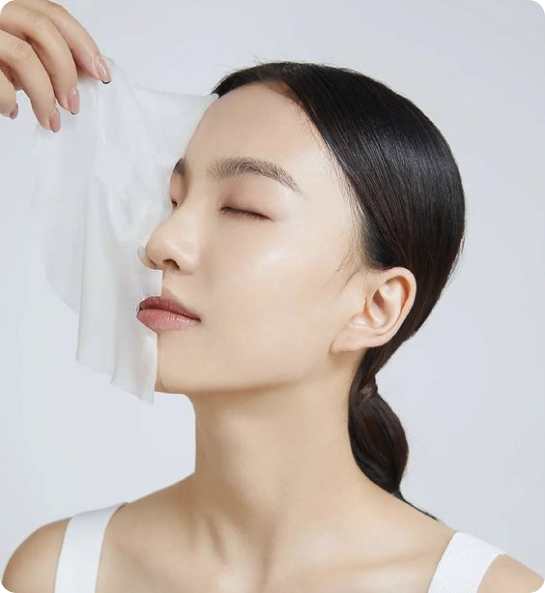
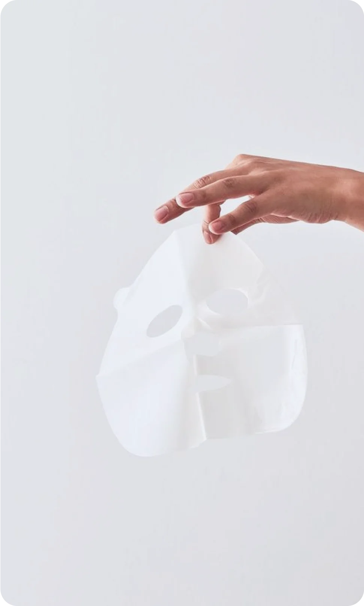

18 марта 2024
уход
советы
Экспресс-уход за кожей - это подход к уходу за кожей, который предполагает минимальное количество времени, затрачиваемого на уход, и максимальное удовлетворение от результатов. Это идеальный вариант для занятых людей, которые имеют ограниченное количество времени для ухода за кожей, но при этом хотят сохранить свою кожу в хорошем состоянии. Сегодня поделимся несколькими полезными способами экспресс-ухода.
Многофункциональные продукты
Многофункциональные продукты в уходе за кожей - это косметические средства, которые комбинируют несколько функций в одном продукте, что позволяет сократить количество шагов в уходе за кожей и использовать меньше продуктов. Такие продукты становятся все более популярными, особенно для людей с ограниченным временем и для тех, кто предпочитает более простой и удобный подход к уходу за кожей. Сейчас расскажем подробнее о нескольких многофункциональных продуктах для ухода за кожей.
BB-кремы и CC-кремы — это средства, которые сочетают в себе свойства увлажняющего кремя, защиты от солнца и базы под макияж. Они обычно содержат легкие оттеночные компоненты для мгновенной коррекции тона кожи, а также удовлетворяют потребности в увлажнении и защите от солнца.
Многофункциональные сыворотки: некоторые сыворотки могут содержать комбинацию активных ингредиентов, таких как антивозрастные компоненты, витамины и увлажняющие добавки, чтобы обеспечить комплексный уход за кожей.
Увлажняющие средства с SPF: Многофункциональные увлажняющие средства, содержащие защиту от солнца, предлагают двойное действие - увлажнение и защиту от вредных УФ-лучей.
Маски для лица
Маски для лица являются отличным вариантом для экспресс-ухода за кожей, поскольку они предлагают интенсивный уход за кожей в относительно короткий срок. Увлажняющие маски могут помочь восстановить уровень влаги в коже, особенно если она находится в стрессовых условиях или испытывает дефицит увлажнения. Маски с глиной, углем или другими очищающими компонентами могут помочь освободить поры от загрязнений и излишков кожного сала. А гидрогелевые или силиконовые патчи для глаз смогут уменьшить отеки, устранить темные круги и увлажнить нежную кожу вокруг глаз.
 
Мини-процедуры
Экспресс-процедуры – это замечательный способ улучшить состояние кожи лица в преддверии какого-либо важного мероприятия. Мы подобрали несколько мини-процедур, которые могут быть вам полезны:
1. Эксфолиация: Нежный пилинг на основе фруктовых кислот или ферментов может быть выполнен за короткий срок и помочь удалить отмершие клетки кожи, улучшив текстуру кожи и стимулируя обновление клеток.
2. Фототерапия: Мини-процедуры фототерапии, такие как LED-терапия, могут быть использованы для улучшения состояния кожи, уменьшения воспаления и стимуляции производства коллагена и эластина.
3. Микротоковая терапия: деликатное воздействие микротоков на кожу стимулирует синтез белков и улучшает обмен веществ в клетках, а также восстанавливает тонус лицевых мышц.
К сожалению, экспресс-уход за кожей не сможет заменить полноценную уходовую рутину, однако может помочь вернуть лицу свежий и отдохнувший вид при минимальных затратах времени и энергии.